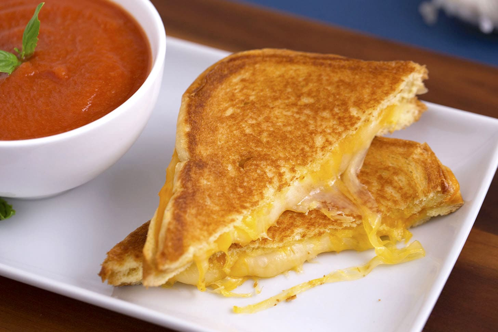
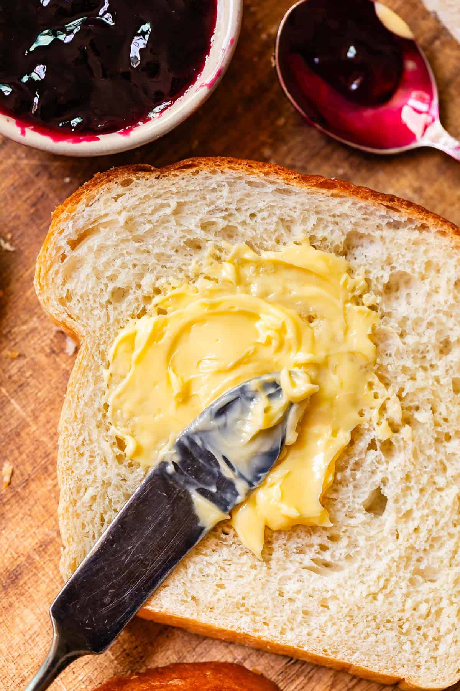

GRILLED CHEESE & TOMATO SOUP
A warm, comforting classic made with crispy grilled cheese and creamy tomato soup — perfect for beginners, busy college students, or anyone who wants a quick and satisfying meal.
Cooking time 15-20 minutes
Serves 2
Ingredients For The Grilled Cheese
- 4 slices of bread
- 4 slices of cheese (American, cheddar, or mozzarella)
- 2 tbsp butter
Ingredients For The Tomato Soup
- 1 can tomato soup
- 1 cup milk (or water, check can instructions)
Instructions
- Heat a saucepan over medium heat. Pour in the tomato soup and milk (or water). Stir well.
- Cook the soup for about 5–7 minutes, stirring occasionally, until heated through. Turn heat to low and keep warm.
- Butter one side of each slice of bread.
- Place one slice of bread butter-side down in a pan over medium heat. Add 2 slices of cheese on top.
- Place the second slice of bread on top, butter-side up.
- Cook for 2–3 minutes until golden brown. Flip and cook the other side until golden and the cheese is melted.
- Repeat for the second sandwich.
- Slice the sandwiches in half and serve with the warm tomato soup.

